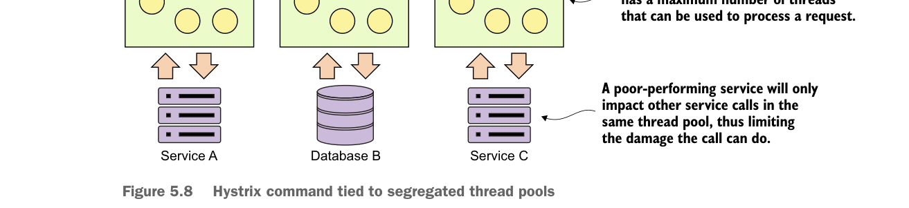

Hystrix command tied to segregated thread pools
Fortunately, Hystrix provides an easy-to-use mechanism for creating bulkheads between different remote resource calls. Figure 5.8 shows what Hystrix managed resources look like when they’re segregated into their own “bulkheads.”
To implement segregated thread pools, you need to use additional attributes exposed through the @HystrixCommand annotation. Let’s look at some code that will
- Set up a separate thread pool for the
getLicensesByOrg()call - Set the number of threads in the thread pool
- Set the queue size for the number of requests that can queue if the individual threads are busy
The following listing demonstrates how to set up a bulkhead around all calls surrounding the look-up of licensing data from our licensing service.
Creating a bulkhead around the
getLicensesByOrg() method@HystrixCommand(fallbackMethod = "buildFallbackLicenseList",
threadPoolKey = "licenseByOrgThreadPool",
threadPoolProperties =
{@HystrixProperty(name = "coreSize", value="30"),
@HystrixProperty(name="maxQueueSize", value="10")}
)
public List<License> getLicensesByOrg(String organizationId){
return licenseRepository.findByOrganizationId(organizationId);
}The threadPoolKey attribute defines the unique name of thread pool.
The threadPoolProperties attribute lets you define and customize the behavior of the threadPool.
The coreSize attribute lets you define the maximum number of threads in the thread pool.
The maxQueueSize lets you define a queue that sits in front of your thread pool and that can queue incoming requests.